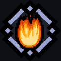
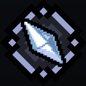
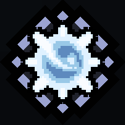
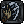
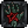
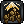

Маг - один из игровых классов, доступен при выборе стартовым после обучения, либо после строительства Колдовской лаборатории в Крепости. Ориентирован на дальний бой.
Маг взывает к древним силам из недр мироздания, направляя их на уничтожение целых групп врагов.
Также он способен подчинять слабых противников и лечить себя.
Быстрые атаки

Огненный шар
Огненный шар
Описание:"Сгусток маны, принявший форму пламени. Наносит урон огнем и имеет шанс поджечь врага. Освоив лучше этот навык, персонаж сможет создавать огненные шары, которые будут взрываться, нанося урон всем ближайшим целям."
Как и любой огненный урон, при попадании по противнику может поджечь его. К тому же, огненный урон наносит на 50% больше урона зверям, но не эффективен против демонов
Описание:"Разряд маны, напитанный силой молний. После удара по врагу с некоторым шансом дополнительные разряды ударят и по соседним существам, что особенно полезно против противников, которые стоят в воде. Крайне эффективно против мутантов."
Молниевый урон имеет шанс создать электрический разряд, который мгновенно нанесет урон одному или нескольким другим противникам рядом с целью. Молниевый урон наносит на 50% больше повреждений мутантам, но неэффективен против элементалей. Эффективность и область действия электрического разряда существенно увеличена, если цель находится в воде
Описание:"Луч слепяще чистого света, какой редко можно увидеть в подземном мире. Он пронзает плоть и сжигает кости, причиняя невыносимые страдания тем, кому они, казалось бы, давно чужды - нежити и демонам."
Святой урон наносит на 25% больше повреждений нежити, демонам и любым призванным существам, а также восстанавливает персонажу немного ОМ при их убийстве. Однако, все остальные существа получают на 20% меньше этого урона
Описание:"Персонаж призывает волну пламени, которая испепеляет перед ним все, до чего может дотянуться. Как и любой огненный урон - крайне опасно для зверей и неэффективно против демонов."
Навык активен, пока удерживается кнопка
Пламя, создаваемое на месте убитых врагов, не наносит урона самому персонажу и его союзникам
Перед первым "тиком" урона есть небольшая задержка, из-за чего не получится наносить урон, быстро кликая по кнопке навыка (до обновления 1.37 это было возможно)
Создает Пламя, кот. наносит X% урона персонажа за каждого убитого врага с шансом в 40%
—
50%

Ледяной шип
Ледяной шип
Описание:"Мощная атака, которая сосредотачивает магическую энергию в убийственно острой глыбе льда, рассекающей плоть врагов, как бумагу. Лед настолько холодный, что может заморозить врага, по которому ударит, что особенно полезно в бою с демонами. Если влить в эту ледышку достаточно сил, она даже сможет прошибить врага насквозь."
Ледяной урон имеет шанс наложить Обморожение на противника. Он наносит на 50% больше повреждений демонам, но менее эффективен против механизмов
[Заряд (II)]: Создает область взрыва, наносящую ближ. врагам X% урона
—
50%

Силовая волна
Силовая волна
Описание:"Персонаж накапливает заряд чистой силы и выплескивает его вокруг себя, отталкивая всех врагов. Подготовившись и вложив дополнительную ману в этот навык, можно нанести дробящий урон каждому врагу в зоне досягаемости."
Силовая волна — значения по уровням
Эффект/Уровень
1
2
3
4
5
6
7
8
9
10
11
12
13
14
15
16
17
18
19
20
21
22
23
24
25
Стоимость ОМ
2,3
2,4
2,5
2,6
2,7
2,8
2,9
3,0
3,1
3,2
3,3
3,4
3,5
3,6
3,7
3,8
3,9
4,0
4,1
4,2
4,3
4,4
Наносимый урон
0%

Отталкивание
300
302
304
306
308
310
312
314
316
318
320
322
324
326
328
330
332
334
336
338
340
342
344
346
348
Область действия
400%
403%
406%
409%
412%
415%
418%
421%
424%
427%
430%
433%
436%
439%
442%
445%
448%
451%
454%
457%
460%
463%
466%
469%
472%

Цель на N с. получ. эффект с шансом в X%: Замедление (50%)
—
20% 5 с.
21% 5,2 с.
22% 5,4 с.
23% 5,6 с.
24% 5,8 с.
25% 6 с.
26% 6,2 с.
27% 6,4 с.
28% 6,6 с.
29% 6,8 с.
30% 7 с.
31% 7,2 с.
32% 7,4 с.
33% 7,6 с.
Цель на 4 с. получ. эффект с шансом в X%: Оглушение
[При деакт-ии]: Создает область взрыва, наносящую ближ. врагам X урона
—
125%
Подчинение
Подчинение
Описание:"Персонаж на время подчиняет сопоставимого с собой по силе монстра, заставляя его сражаться на своей стороне. Чем выше уровень навыка - тем выше шанс подчинить монстра, чей уровень выше уровня мага."
Описание:"Персонаж тратит значительное количество маны, восстанавливая часть собственного здоровья. После улучшения навыка появится возможность вложить в него еще больше магии, чтобы вылечить всех ближайших союзников."
Восстановление — значения по уровням
Эффект/Уровень
1
2
3
4
5
6
7
8
9
10
11
12
13
14
15
16
17
18
19
20
21
22
23
24
25
Стоимость ОМ
3,8
3,9
4,1
4,2
4,4
4,5
4,7
4,8
5,0
5,1
5,3
5,4
5,6
5,7
5,9
6,0
6,2
6,3
6,5
6,6
6,8
6,9
7,1
7,2
7,4
Мгновенно восст. ОЗ
2
3
4
5
6
7
Время действия всех актив-х негативных эффектов снижено на N с.
—
-1 с.
Восстановление — заряженная версия
Эффект/Уровень
1
2
3
4
5
6
7
8
9
10
11
12
13
14
15
16
17
18
19
20
21
22
23
24
25
Скор. передвижения
-50%
Реген. ОМ
-120%
Мгновенно восст. ОЗ
6
7
8
9
10
11
12
13
14
15
16
17
18
19
20
21
22
23
24
25
26
27
28
29
30

[Заряд (II)]: Восст. ОЗ всем ближайшим живым союзникам
—
19
20
21
22
23
24
25
26
27
28
29
30
31
32
[Заряд (II)]: Время действия всех актив-х негативных эффектов снижено на N с.
—
-3 с.
Интересные факты
Классовое оружие Мага - посохи, но он может без штрафов использовать и жезлы (классовое оружие Некроманта)
Фолианты повышают запас ОМ и снижают ее расход на применение навыков. Некромант может использовать фолианты Мага, но Маг не может использовать его гримуары - так как те влияют только на призываемую нежить
В обновлении 1.37 часть навыков Мага была изменена: вместо Силовой волны он обладал навыком Инферно (этот навык просто наносил урон в области), а вместо Ледяного шипа - Чума (навык превращал всю кровь рядом с персонажем в яд и наоборот; этот навык обосновано считался самым бесполезным в игре)
До обновления 1.37 "Огненное дыхание" называлось "Адское пламя", а сам навык не имел пиксельной стилизации, из-за чего заметно выбивался из общего стиля
Чистый магический урон - основной для всех навыков Мага, не считая доп. типы - наносит на 20% больше урона механизмам и элементалям
 Наносимый урон
Наносимый урон Мгновенно восст. ОЗ
Мгновенно восст. ОЗ